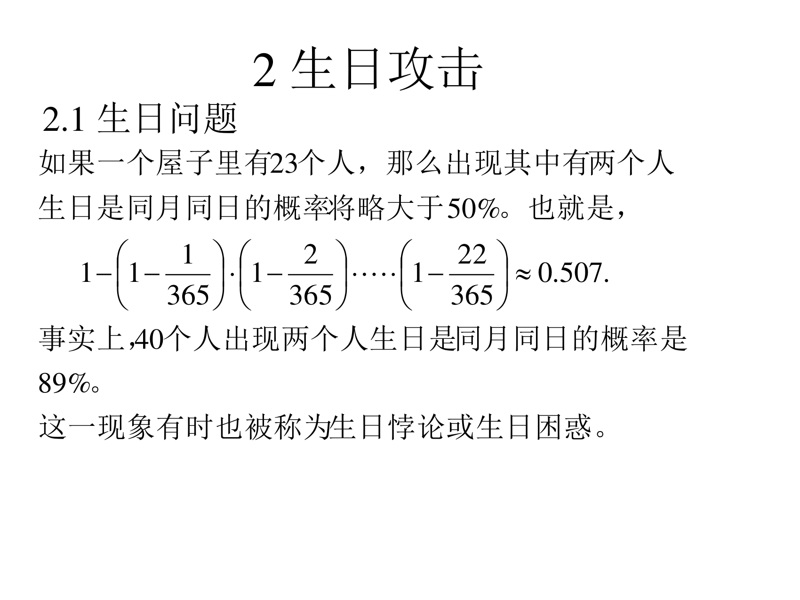
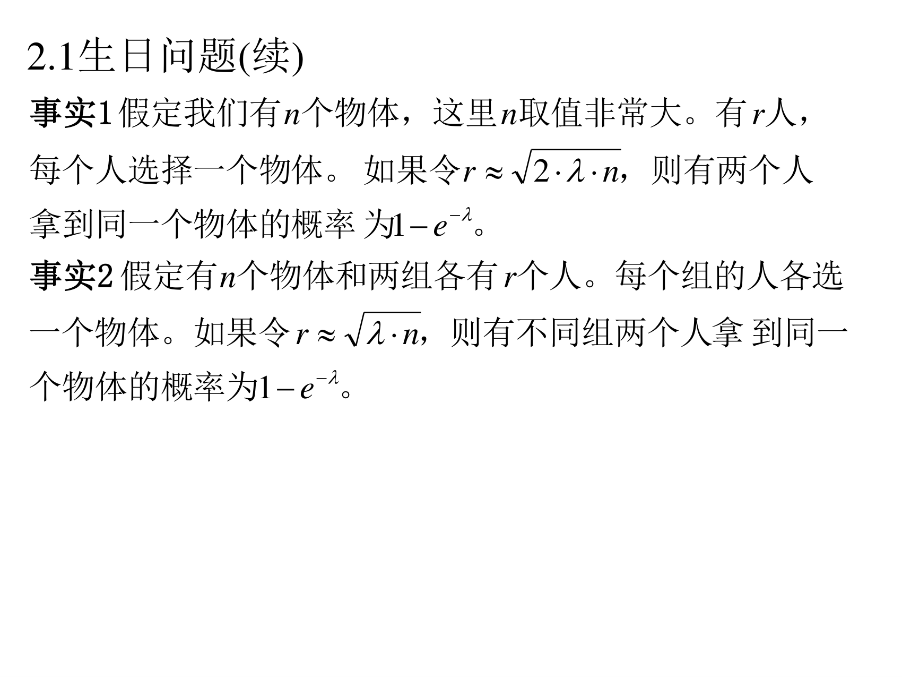
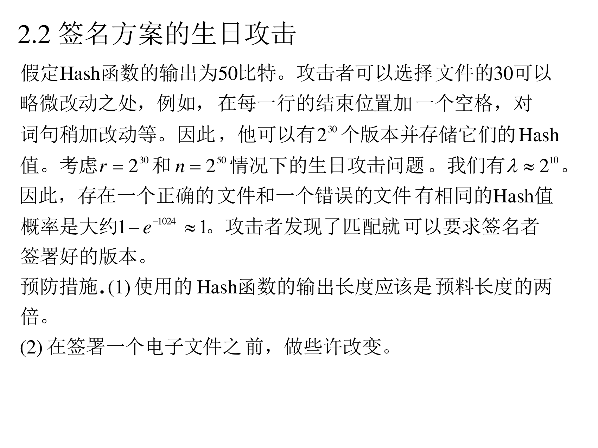
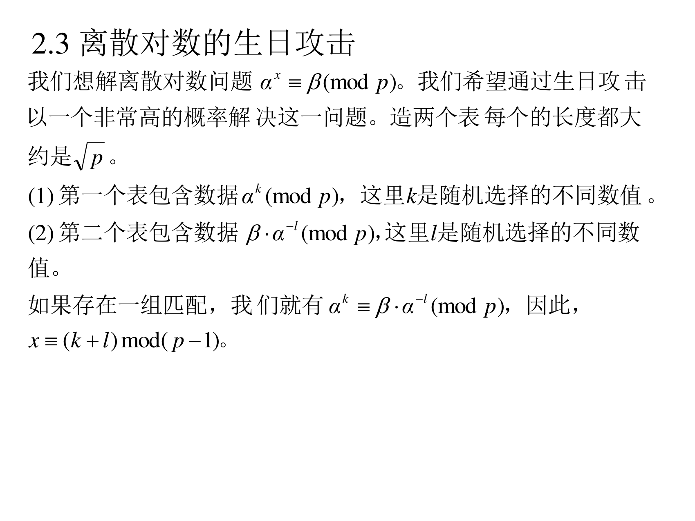
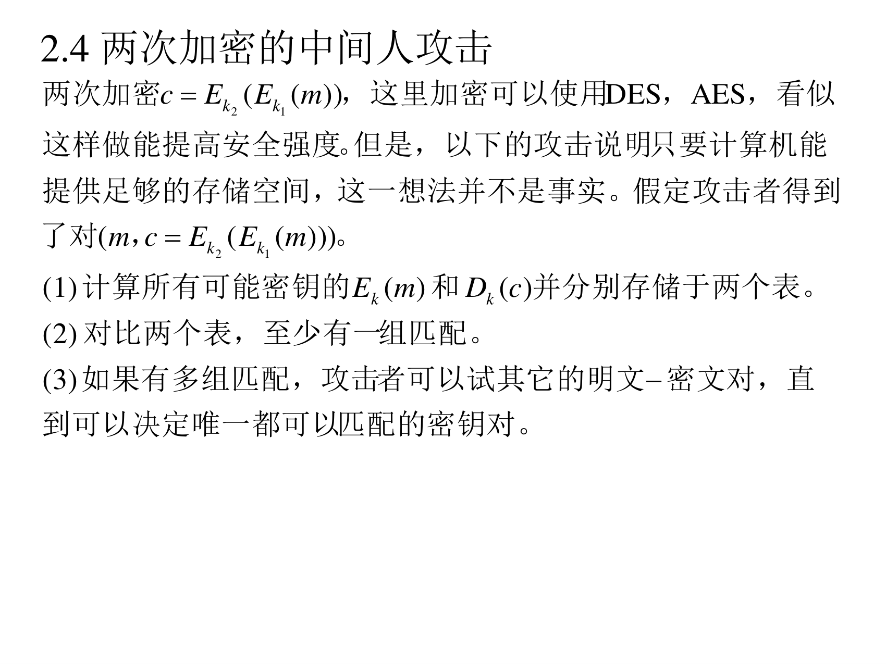
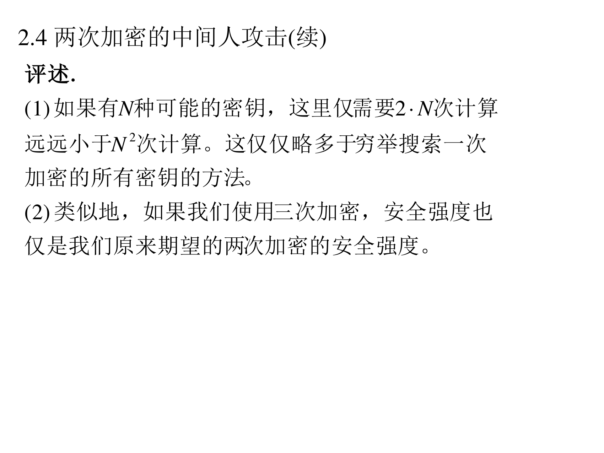

本页目录
8.2 生日攻击
前面三节都是"签名方案"，这一节换了个视角：攻击一种"找碰撞"的思路 。它的威力在于：本来是"要试 n n n n \sqrt{n} n 。这直接决定了所有 Hash 函数的输出长度、以及为什么"两次加密"救不了你。
8.2.1 生日问题
（PPT 第 28 页）

如果一个屋子里有 23 个人，那么出现其中有两个人生日是同月同日 的概率将略大于 50%。也就是，
1 − ( 1 − 1 365 ) ( 1 − 2 365 ) ⋯ ( 1 − 22 365 ) ≈ 0.507 1-\left(1-\frac{1}{365}\right)\left(1-\frac{2}{365}\right)\cdots\left(1-\frac{22}{365}\right)\approx0.507 1 − ( 1 − 365 1 ) ( 1 − 365 2 ) ⋯ ( 1 − 365 22 ) ≈ 0.507 生日悖论 或生日困惑 。
这个公式怎么来的 （一步一步）：
先算"所有人都不撞 "的概率：第 1 个人随便哪天都行（365 / 365 365/365 365/365 364 / 365 364/365 364/365 363 / 365 363/365 363/365 ( 365 − 22 ) / 365 (365-22)/365 ( 365 − 22 ) /365
所以"不撞"的概率是 ∏ i = 1 22 ( 1 − i 365 ) ≈ 0.493 \prod_{i=1}^{22}\left(1-\frac{i}{365}\right)\approx0.493 ∏ i = 1 22 ( 1 − 365 i ) ≈ 0.493
"至少有一对撞"就是 1 − 0.493 = 0.507 1-0.493=0.507 1 − 0.493 = 0.507
为什么反直觉 ：人们直觉上算的是"和我 生日相同的人"，那需要 253 个人才有 50% 概率。但生日悖论问的是"任意两个人 之间"，配对数 是 ( 23 2 ) = 253 \binom{23}{2}=253 ( 2 23 ) = 253
补 这就是"为什么找碰撞只要 n \sqrt{n} n n n n r ≈ n r\approx\sqrt{n} r ≈ n r 2 / 2 r^2/2 r 2 /2 r 2 / 2 ≈ n r^2/2\approx n r 2 /2 ≈ n
（PPT 第 29 页）两个事实（把上面的直觉变成公式）

事实 1 假定我们有 n n n n n n r r r r ≈ 2 ⋅ λ ⋅ n r\approx\sqrt{2\cdot\lambda\cdot n} r ≈ 2 ⋅ λ ⋅ n 1 − e − λ 1-e^{-\lambda} 1 − e − λ 事实 2 假定有 n n n r r r r ≈ λ ⋅ n r\approx\sqrt{\lambda\cdot n} r ≈ λ ⋅ n 1 − e − λ 1-e^{-\lambda} 1 − e − λ
翻译成人话 （两个事实的区别非常关键，务必分清）：
事实 1（"组内"）
事实 2（"两组之间"）
场景
一组 人自己内部找碰撞两组 人，找"跨组一样"的一对
需要多少人
r ≈ 2 λ n r\approx\sqrt{2\lambda n} r ≈ 2 λn r ≈ λ n r\approx\sqrt{\lambda n} r ≈ λn
差别
多了个 2 \sqrt{2} 2
少一个 2 \sqrt{2} 2
为什么事实 2 更省人 ：因为比较的是"跨组 的每一对"（r × r = r 2 r\times r=r^2 r × r = r 2 ( r 2 ) ≈ r 2 / 2 \binom{r}{2}\approx r^2/2 ( 2 r ) ≈ r 2 /2 组数是 2 的时候，配对多了一倍，人数就少了 2 \sqrt{2} 2 。
取 λ = 1 \lambda=1 λ = 1 ：1 − e − 1 ≈ 63 % 1-e^{-1}\approx63\% 1 − e − 1 ≈ 63% λ = ln 2 ≈ 0.693 \lambda=\ln2\approx0.693 λ = ln 2 ≈ 0.693 1 − e − λ = 50 % 1-e^{-\lambda}=50\% 1 − e − λ = 50%
8.2.2 签名方案的生日攻击
（PPT 第 30 页）

假定 Hash 函数的输出为 50 比特 。攻击者可以选择文件的 30 可以略微改动之处，例如，在每一行的结束位置加一个空格，对词句稍加改动等。因此，他可以有 2 30 2^{30} 2 30 r = 2 30 r=2^{30} r = 2 30 n = 2 50 n=2^{50} n = 2 50 λ ≈ 2 10 \lambda\approx2^{10} λ ≈ 2 10 正确的文件和一个错误的文件有相同的 Hash 值概率是大约 1 − e − 1024 ≈ 1 1-e^{-1024}\approx1 1 − e − 1024 ≈ 1 。攻击者发现了匹配就可以要求签名者签署好的版本 。
预防措施. (1) 使用的 Hash 函数的输出长度应该是预料长度的两倍 。(2) 在签署一个电子文件之前，做些许改变。
翻译成人话 （一个完整的骗局）：
准备两份文件 ：一份是"A 愿意支付 100 元"（好版本 ，签名者愿意签），另一份是"A 愿意支付 100 万元"（坏版本 ，签名者不知道）。各自制造大量变体 ：给文件加空格、改同义词、换标点……每种改动都产生一个新版本，而文件的意思不变 。攻击者给每份文件造 2 30 2^{30} 2 30 算 Hash 找碰撞 ：因为 Hash 输出只有 50 比特（n = 2 50 n=2^{50} n = 2 50 2 30 2^{30} 2 30 事实 2 的两组场景），
λ = r 2 n = 2 60 2 50 = 2 10 = 1024 \lambda=\frac{r^2}{n}=\frac{2^{60}}{2^{50}}=2^{10}=1024 λ = n r 2 = 2 50 2 60 = 2 10 = 1024 好版本的某个变体 ≡ \equiv ≡ 坏版本的某个变体 "的概率是 1 − e − 1024 ≈ 1 1-e^{-1024}\approx1 1 − e − 1024 ≈ 1 几乎必然成功 （本讲义验算：λ = r 2 / n = 2 10 \lambda=r^2/n=2^{10} λ = r 2 / n = 2 10 骗签名 ：把"好版本的那个变体"拿给 A 签。偷天换日 ：拿到签名后，附到"坏版本的对应变体"上 —— Hash 值相同，签名验证通过 。A 没法否认（签名确实是他签的），但内容已经变成 100 万元。
两条预防措施的含义 ：
(1) 输出长度翻倍 ：Hash 要是 100 比特，n = 2 100 n=2^{100} n = 2 100 2 30 2^{30} 2 30 λ = 2 60 / 2 100 = 2 − 40 \lambda=2^{60}/2^{100}=2^{-40} λ = 2 60 / 2 100 = 2 − 40 碰撞概率可以忽略 。这条规则就是"Hash 长度要选成攻击者所需工作量平方的两倍 "（因为攻击只需 \sqrt{} (2) 签署前做点改动 ：让攻击者无法预知被签名的确切比特串（也就无法提前造好变体），比如签名时加时间戳、加随机数 。
补 和第四讲的关系N \sqrt{N} N 完整版和量化版 ，并且换了个用途——攻击者用它对签名下手 。
8.2.3 离散对数的生日攻击
（PPT 第 31 页）

我们想解离散对数问题 α x ≡ β ( m o d p ) \alpha^{x}\equiv\beta\pmod p α x ≡ β ( mod p ) 造两个表 每个的长度都大约是 p \sqrt{p} p (1) 第一个表包含数据 α k ( m o d p ) \alpha^{k}\pmod p α k ( mod p ) k k k (2) 第二个表包含数据 β ⋅ α − l ( m o d p ) \beta\cdot\alpha^{-l}\pmod p β ⋅ α − l ( mod p ) l l l α k ≡ β ⋅ α − l ( m o d p ) \alpha^{k}\equiv\beta\cdot\alpha^{-l}\pmod p α k ≡ β ⋅ α − l ( mod p ) x ≡ ( k + l ) m o d ( p − 1 ) x\equiv(k+l)\bmod(p-1) x ≡ ( k + l ) mod ( p − 1 )
翻译成人话 ：这是小步大步算法的"随机版 + 生日版" ，也是 Pollard rho 的姊妹想法：
目标：找 k , l k,l k , l α k = β α − l \alpha^{k}=\beta\alpha^{-l} α k = β α − l α k + l = β \alpha^{k+l}=\beta α k + l = β x = k + l x=k+l x = k + l
左边表有 p \sqrt{p} p p \sqrt{p} p p p p r × r = p r\times r=p r × r = p
而可取的值一共有 p − 1 p-1 p − 1 p p p p − 1 p-1 p − 1 碰撞概率约 1 − e − 1 = 63 % 1-e^{-1}=63\% 1 − e − 1 = 63% （用事实 2，λ = r 2 / n = p / p ≈ 1 \lambda=r^2/n=p/p\approx1 λ = r 2 / n = p / p ≈ 1
所以 ：用 2 p 2\sqrt{p} 2 p 2 p 2\sqrt{p} 2 p 这就是为什么小步大步、rho 的复杂度都是 p \sqrt{p} p —— 生日效应是所有这些算法的共同物理下限 。
8.2.4 两次加密的中间人攻击
（PPT 第 32–33 页）
两次加密 c = E k 2 ( E k 1 ( m ) ) c=E_{k_2}(E_{k_1}(m)) c = E k 2 ( E k 1 ( m )) 看似这样做能提高安全强度 。但是，以下的攻击说明只要计算机能提供足够的存储空间，这一想法并不是事实。假定攻击者得到了对 ( m , c = E k 2 ( E k 1 ( m ) ) ) (m,c=E_{k_2}(E_{k_1}(m))) ( m , c = E k 2 ( E k 1 ( m ))) (1) 计算所有可能密钥的 E k ( m ) E_{k}(m) E k ( m ) D k ( c ) D_{k}(c) D k ( c ) (2) 对比两个表，至少有一组匹配。
(3) 如果有多组匹配，攻击者可以试其它的明文-密文对，直到可以决定唯一都可以匹配的密钥对。

评述（PPT 第 33 页）

(1) 如果有 N N N 2 ⋅ N 2\cdot N 2 ⋅ N 远远小于 N 2 N^{2} N 2 。这仅仅略多于穷举搜索一次加密 的所有密钥的方法。
(2) 类似地，如果我们使用三次加密 ，安全强度也仅是我们原来期望的两次加密的安全强度 。
翻译成人话 （这个攻击的数学极简单，但结论很反直觉）：
直觉 ：DES 密钥 56 比特，N = 2 56 N=2^{56} N = 2 56 N 2 = 2 112 N^2=2^{112} N 2 = 2 112 错，只要 2 N = 2 57 2N=2^{57} 2 N = 2 57
攻击过程 （"中间相遇"，meet in the middle）：
从前面 推：对每一个可能的 k 1 k_1 k 1 E k 1 ( m ) E_{k_1}(m) E k 1 ( m ) { k 1 : E k 1 ( m ) } \{k_1: E_{k_1}(m)\} { k 1 : E k 1 ( m )} N N N
从后面 推：对每一个可能的 k 2 k_2 k 2 D k 2 ( c ) D_{k_2}(c) D k 2 ( c ) N N N
中间相遇 ：真正的 ( k 1 , k 2 ) (k_1,k_2) ( k 1 , k 2 ) E k 1 ( m ) = D k 2 ( c ) E_{k_1}(m)=D_{k_2}(c) E k 1 ( m ) = D k 2 ( c ) c = E k 2 ( E k 1 ( m ) ) c=E_{k_2}(E_{k_1}(m)) c = E k 2 ( E k 1 ( m )) E k 1 ( m ) E_{k_1}(m) E k 1 ( m ) 在两表里找相同的值 就得到候选密钥对。可能有多个匹配 （随机碰撞），用另一组已知的 ( m ′ , c ′ ) (m',c') ( m ′ , c ′ ) 就行。
代价 ：2 N 2N 2 N 2 N 2N 2 N 相比 N 2 N^2 N 2 。
两条结论 ：
(1) "两次加密"只把安全强度从 N N N N N N 而不是 N 2 N^2 N 2 。所以加密两次在密码学上是没有意义的 （除非用不同的算法，比如 DES+AES，那就是另一回事）。(2) 更糟：三次加密 才等价于"两次加密的强度"（2 2 n 2^{2n} 2 2 n 2 3 n 2^{3n} 2 3 n 3DES 只能用"两个密钥"（2 112 2^{112} 2 112 的原因——虽然 3DES 有 2 168 2^{168} 2 168 2 112 2^{112} 2 112 这也是为什么 3DES 现在被淘汰、必须用 AES 的原因。